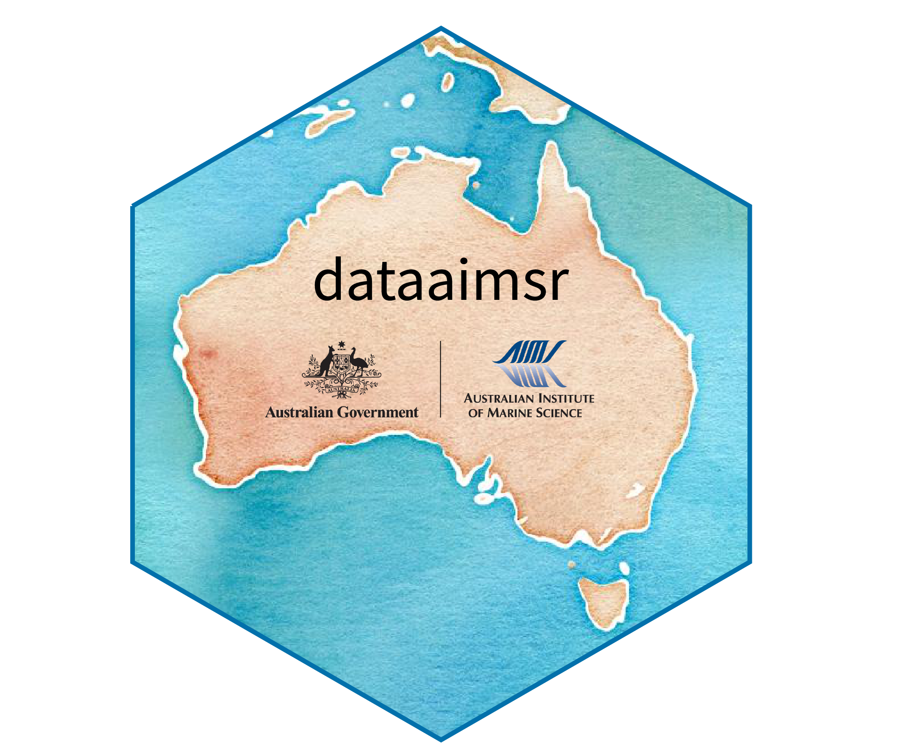

Further data requests via the AIMS Data Platform API
Source:R/page_data.R
next_page_data.RdSimilar to page_data, but for cases #' where there are
multiple URLs for data retrieval
Arguments
- url
A data retrieval URL
- api_key
An AIMS Data Platform API Key
- ...
Additional arguments to be passed to internal function
update_format
Value
aims_data returns a data.frame of class
aimsdf.
If summary %in% c("summary-by-series", "summary-by-deployment"),
the output shows the summary information for the target dataset (i.e.
weather or temperature loggers)
(NB: currently, summary only works for the temperature logger
database). If summary is not passed as an additional argument, then
the output contains raw monitoring data. If summary = "daily",
then the output contains mean daily aggregated monitoring data.
The output also contains five attributes (empty strings if
summary is passed as an additional argument):
metadataa DOI link containing the metadata record for the data series.citationthe citation information for the particular dataset.parametersThe measured parameters comprised in the output.typeThe type of dataset. Either "monitoring" ifsummaryis not specified, "monitoring (daily aggregation)" ifsummary = "daily", or a "summary-by-" otherwise.targetThe input target.
Details
The AIMS Data Platform R Client provides easy access to
data sets for R applications to the
AIMS Data Platform API.
The AIMS Data Platform requires an API Key for requests, which can
be obtained at this
link.
It is preferred that API Keys are not stored in code. We recommend
storing the environment variable AIMS_DATAPLATFORM_API_KEY
permanently under the user's .Renviron file in order to load
the API Key automatically.
There are two types of data currently available through the
AIMS Data Platform API:
Weather and
Sea Water Temperature Loggers.
They are searched internally via unique DOI identifiers.
Only one data type at a time can be passed to the argument target.
A list of arguments for filters can be exposed for both
Weather and
Sea Water Temperature Loggers
using function aims_expose_attributes.
Note that at present the user can inspect the range of dates for
the temperature loggers data only (see usage of argument summary in
the examples below). For that, the argument summary must be either
the string "summary-by-series" or "summary-by-deployment".
In those cases, time filters will be ignored.
Details about available dates for each dataset and time series can be accessed via Metadata on AIMS Data Platform API. We raise this caveat here because these time boundaries are very important; data are collected at very small time intervals, a window of just a few days can yield very large datasets. The query will return and error if it reaches the system's memory capacity.
For that same reason, from version 1.1.0 onwards, we are offering the
possibility of downloading a mean daily aggregated version. For that, the
user must set summary = "daily". In this particular case, query filter
will be taken into account.
Author
AIMS Datacentre adc@aims.gov.au